Photography
Photography Experience
With hands-on experience at Stingraybali.co and PT Kirana Bali Wisata, I have conducted numerous photoshoots ranging from villas, products, to graduation portraits. This background sharpened my eye for composition, lighting, and brand-focused imagery. My ability to edit and retouch using Adobe Lightroom and Photoshop ensures professional results tailored for both web and print.
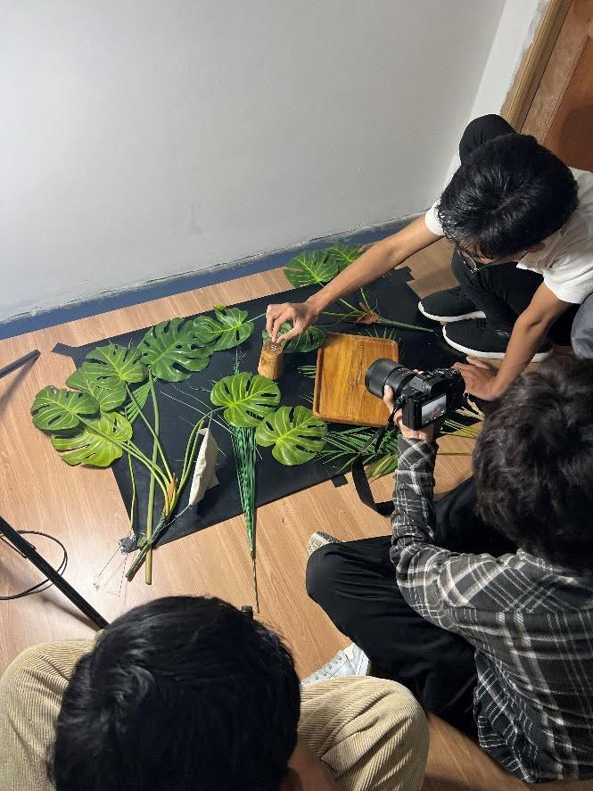
Photography Portfolio
Here is a selection of work that showcases my style and skills.
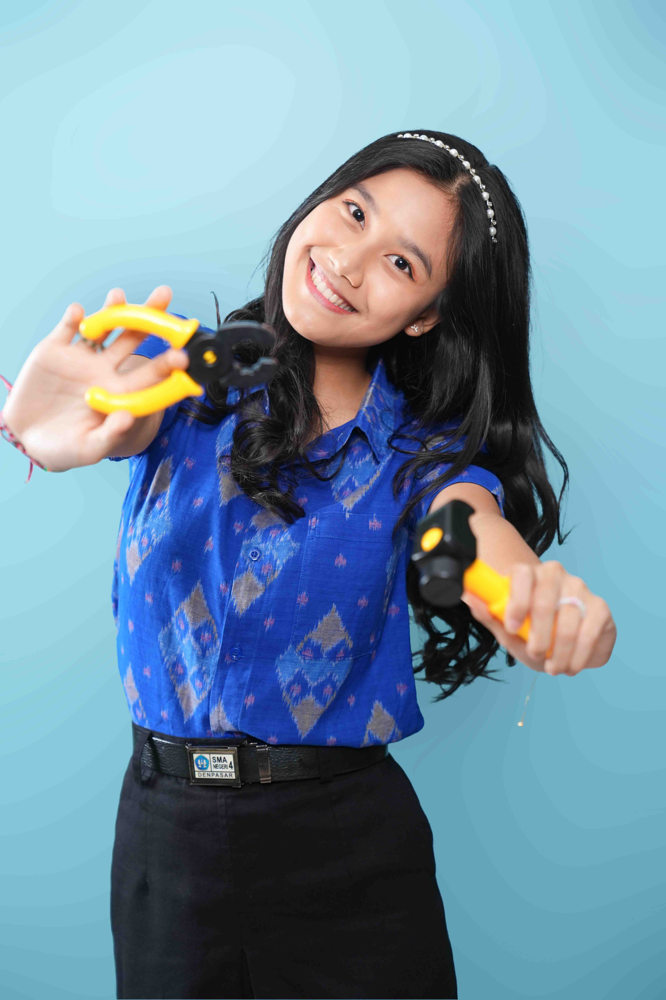
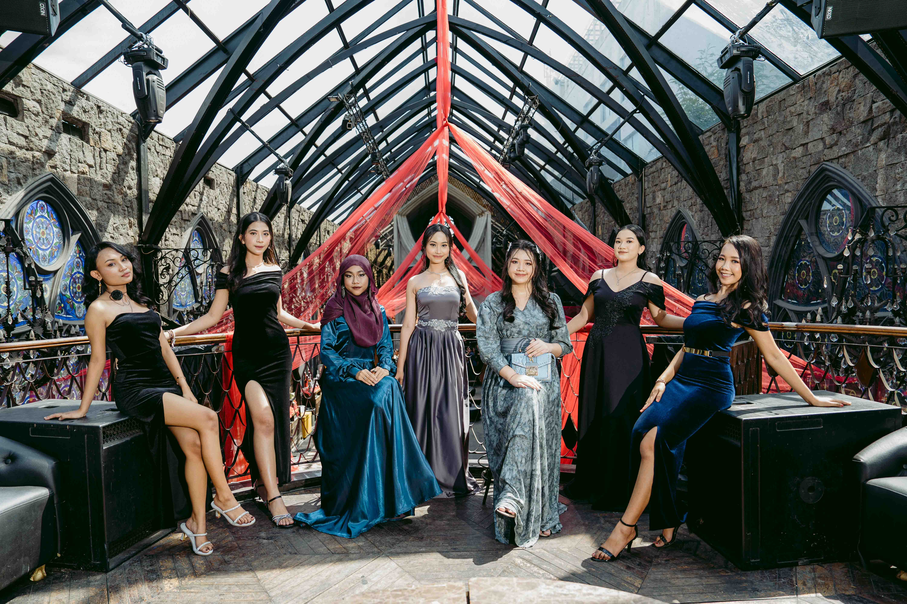
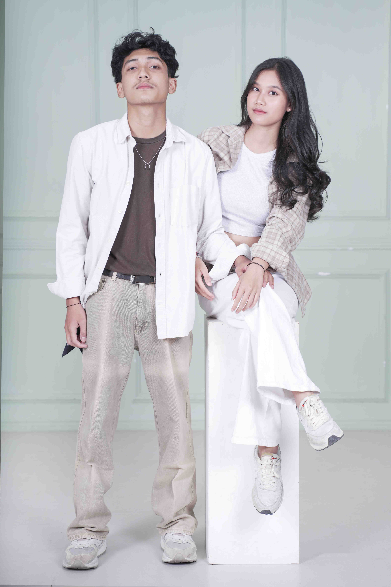
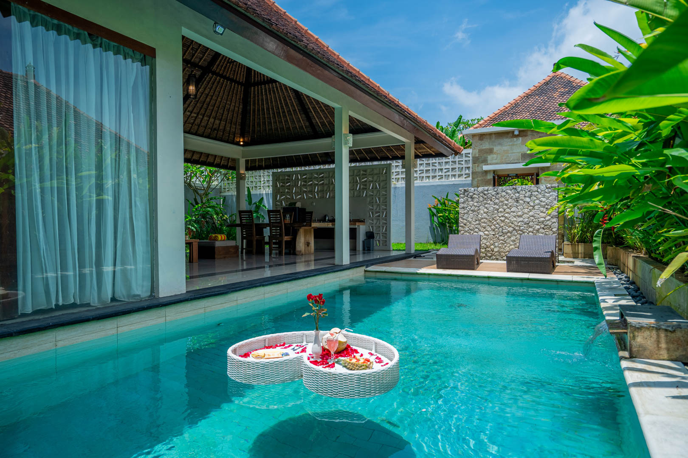
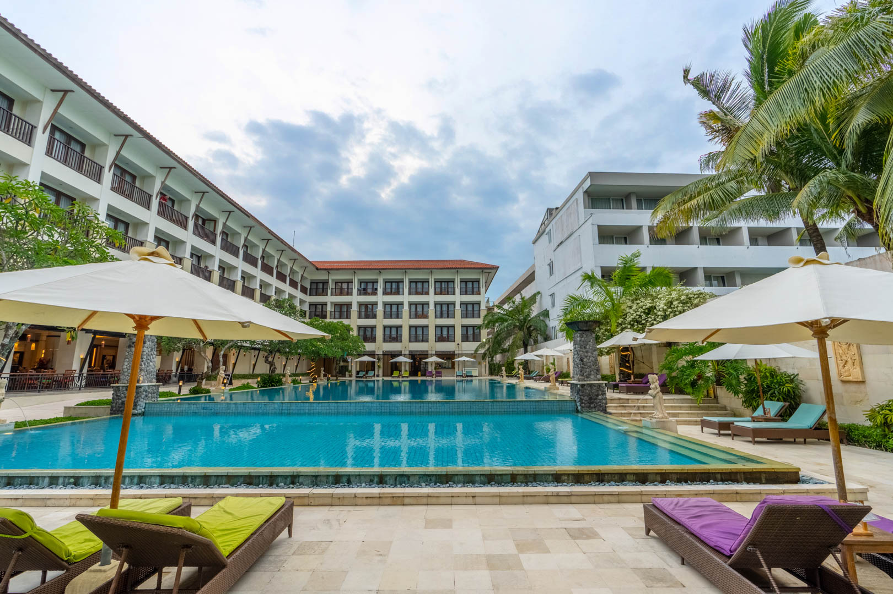
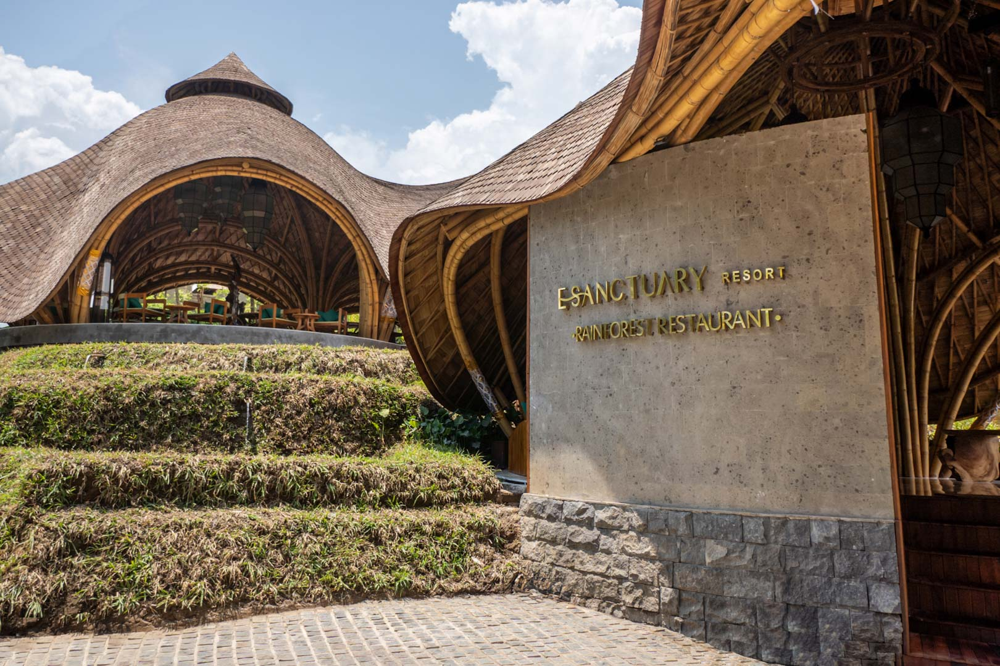
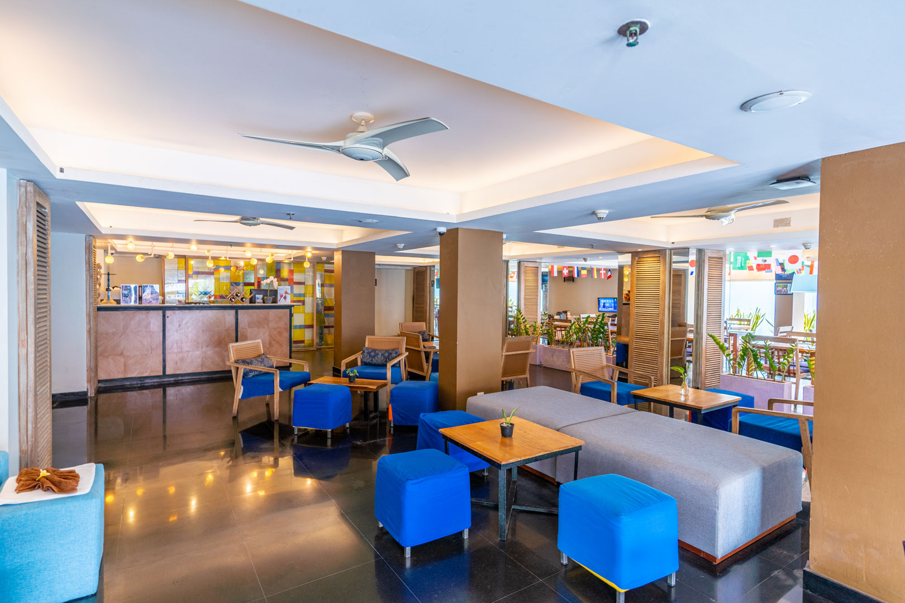
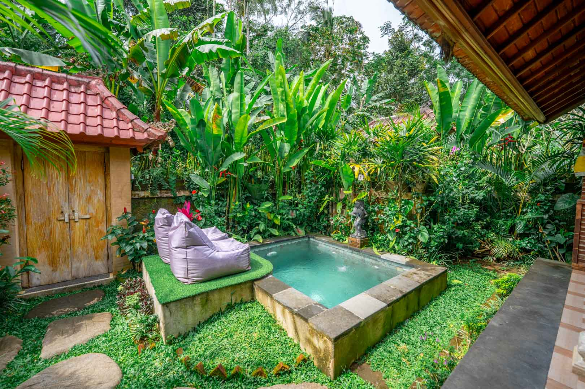
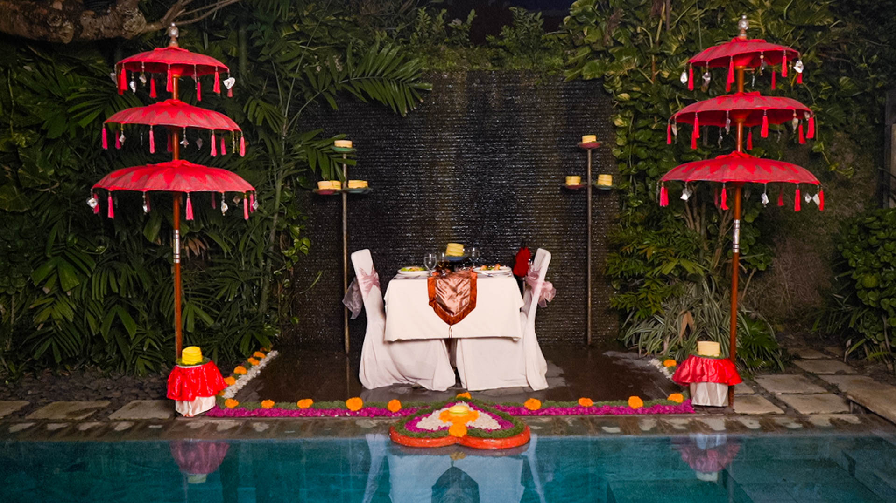
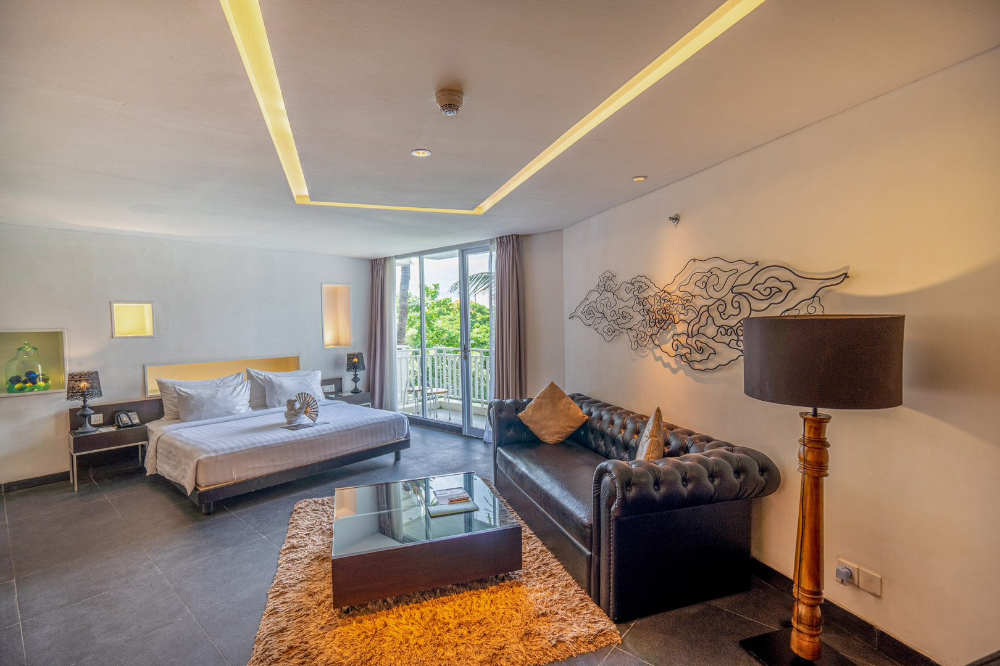
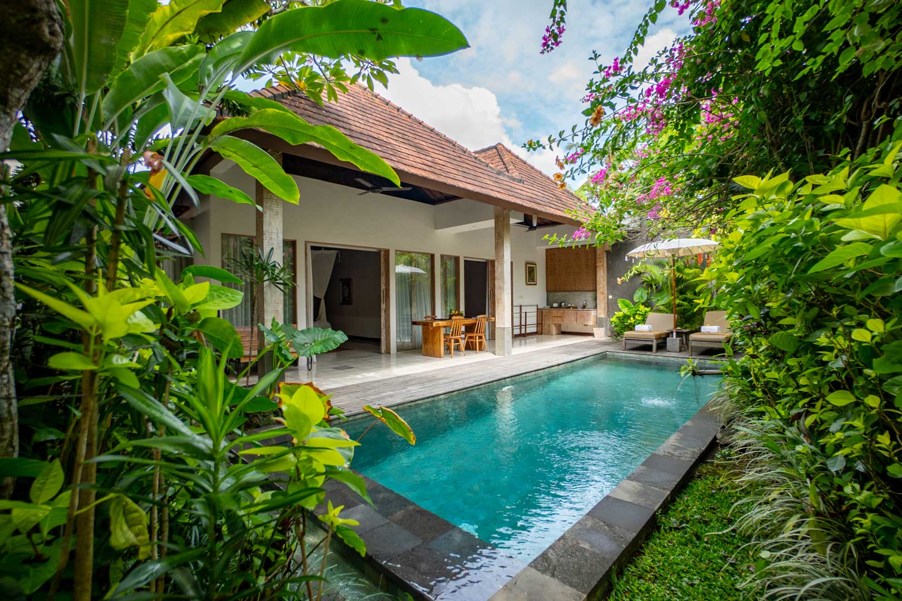
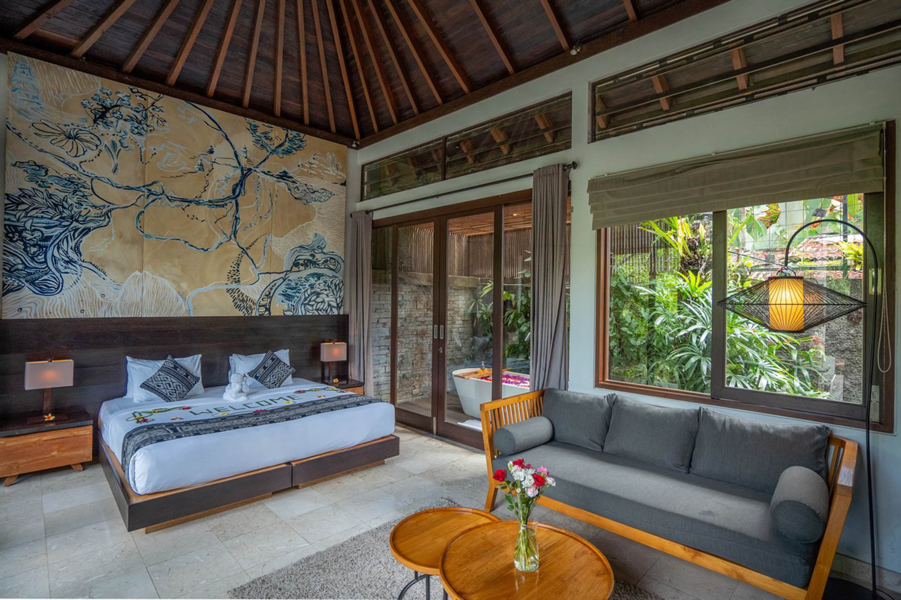
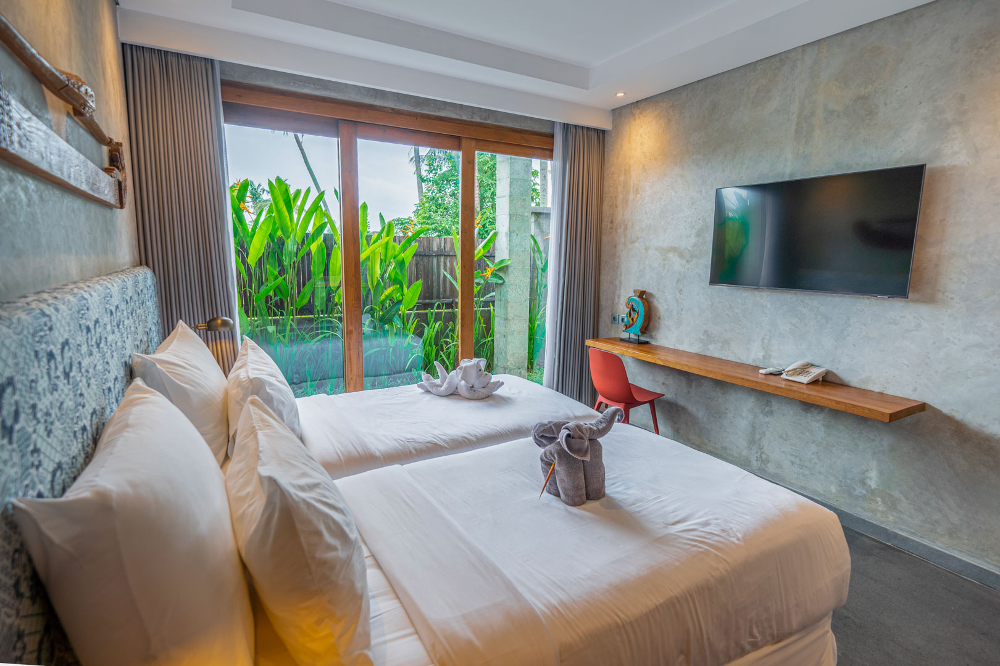
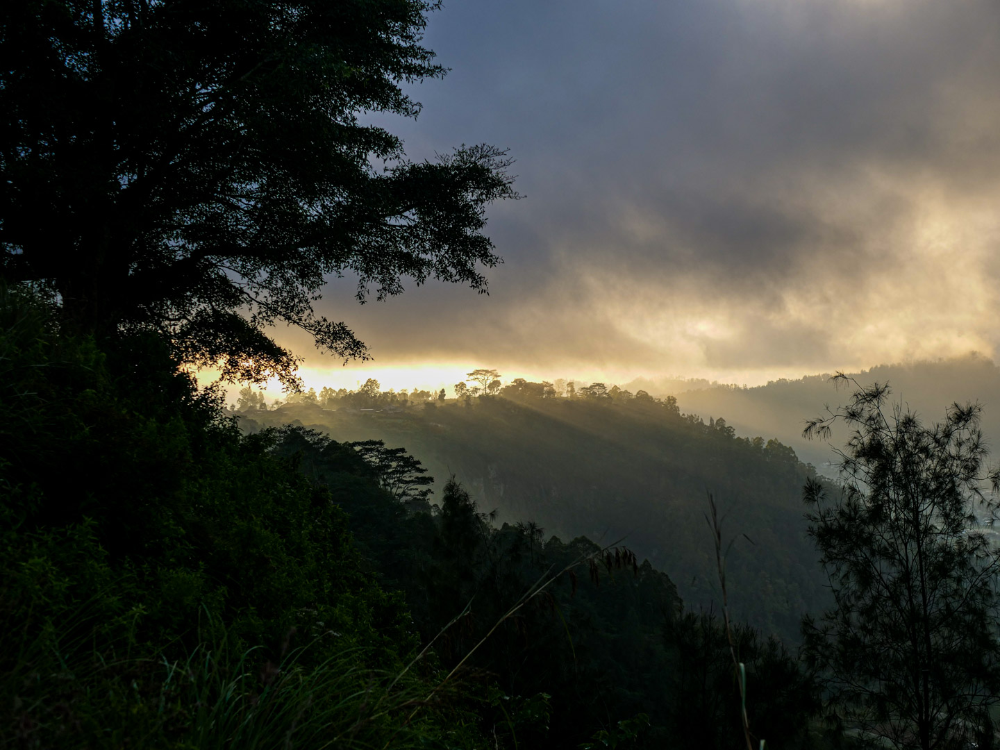
Interested in Collaborating?
Let's bring your visual ideas to life together. Contact me for further discussion.
Contact me